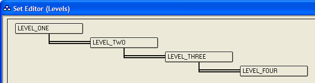
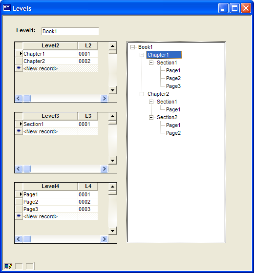

Creating a Tree Control Based on a Set
This example shows how to create a tree control that shows the contents of a set. The set has four levels, as Described in this picture.

Procedure
A tree control on a form displays a CR-LF delimited list of entries. The entries have a form similar to the following.
|
AZ.Phoenix AZ.Tucson CA.Los Angeles CA.Rancho Palos Verdes CT.Riverside DC.Washington HI.Koloa KY.Louisville MA.Arlington MA.Belmont MA.Berlin MA.Boston |
When you examine the list, you can see that it is equivalent to two columns of data, state and city, separated by a period ".". The list may have repeating values. Alpha Five automatically discards repeating values when it displays the data.
|
MA.Arlington.smith.john MA.Boston.jones.fred MA.Boston.jones.sally MA.Boston.williams.peter MA.Boston.williams.janice |
The list may have more than 2 columns. The following is sample data that would display four levels of branches.
|
MA.Arlington.smith.john MA.Boston.jones.fred MA.Boston.jones.sally MA.Boston.williams.peter MA.Boston.williams.janice |
By default the tree control that you use on a form uses the period character as a delimiter.
How to Produce a List of Data
One of the easiest ways to produce a list of appropriately formatted data is to use the TABLE.EXTERNAL_RECORD_CONTENT_GET() and SET.EXTERNAL_RECORD_CONTENT_GET() functions. Both functions rely on a content expression argument that is essentially the following (showing only 3 fields).
|
alltrim(field1) + "." + alltrim(field2) + "." + alltrim(field3) |
When properly formatted, the expression looks like this.
|
"alltrim(TableName->field1) + \".\" + alltrim(TableName->field2) + \".\" + alltrim(TableName->field3)" |
An Example
Draw a tree control on the form.
Right click the tree control and select Properties....
Display the Choices tab.
Select "Computed Automatically" in Choices for control are.
From the Source list select "Expression (that returns a CR-LF delimited list)".
In From Table select the name of the set.
In the Field/expression values to display list select "
" to display the Expression Builder. Enter the following expression and click OK. Note how the fields from the four different tables are separated by periods ".", which happens to be the separator between "branches" of the tree. Because the second argument of SET.EXTERNAL_RECORD_CONTENT_GET() is a string, the quotes around the periods need to be escaped with the backslash character "\".
|
set.external_record_content_get("levels", "alltrim(level_one->Level1) + \".\" + alltrim(level_two->level2) + \".\" + alltrim(level_three->level3) + \".\" + alltrim(level_four->level4)") |
Save your changes. You should be able to produce something that looks like this. This example started with the default browse for the set, which explains why the embedded browses appear.

See Also
Supported By
Alpha Five Version 5 and Above